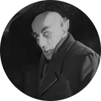
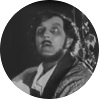
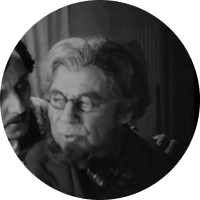
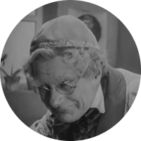
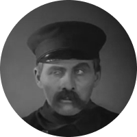
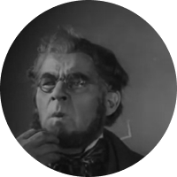
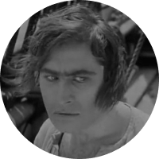
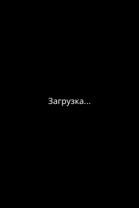

Носферату: Симфония ужаса
О фильме
Германия, 1922Экранизация романа Брэма Стокера «Дракула», снятая классиком немецкого киноэксперссионизма Ф. В. Мурнау. Вследствие того, что режиссёру не удалось получить права на экранизацию романа, сюжет отличается от оригинального: вместо Англии - Германия 1838 года, вместо графа Дракулы - граф Орлок. Именно «Носферату» породил устойчивое представление о губительности солнечного света для вампиров - в романе Стокера солнечный свет лишь ослаблял Дракулу, но не уничтожал.
Актёры

Макс Шрек
Граф Орлок
Гюстав фон Вангенхайм
Томас Хаттер
Грета Шрёдер
Эллен Хаттер, жена Томаса
Александр Гранах
Кнок, риелтор

Георг Шнелль
Ридер Хардинг
Рут Ландсхоф
Рут, сестра Ридера

Гюстав Ботц
Доктор Сиверс

Джон Готтовт
Профессор Бульвер, парацельсианец

Генрих Витте
Стражник психбольницы

Харди фон Франкос
Врач в психбольнице
Макс Немец
Капитан Эмпузы

Вольфганг Хайнц
Боцман
Постеры
